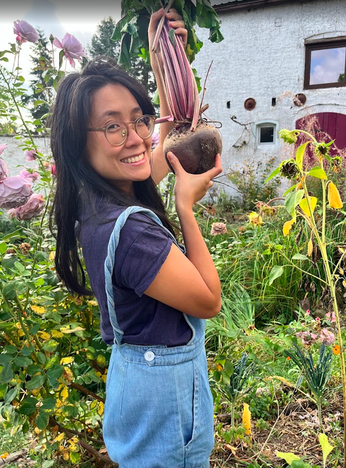

01
Relationships & connection
Communication, closeness, conflict and recurring patterns. Understanding how we relate to others and what we need from our relationships.
Our relationships, the places we come from and the experiences that shape us can leave us with questions that take time to understand. Counselling offers space to pause, reflect and explore what matters to you.
Perhaps a relationship feels difficult to navigate, you're finding your place in a new environment, or you're noticing familiar patterns and wondering where they come from. You might simply want somewhere to think aloud, with another person alongside you.
You don't need a clear question or a particular starting point.
I see counselling as a space to slow down, become curious and look at things from a different angle.
Rather than offering quick answers or telling you what to do, I aim to create a thoughtful conversation in which you can explore your experiences at your own pace.
I'm interested in the ways our relationships shape us: the patterns we repeat, the expectations we carry, the ways we communicate and the things that can be hard to put into words.
I'll bring curiosity, care and an openness to different perspectives. You bring your own experience. We work with what feels important to you.
These are starting points, not boxes to fit into. You don't need to identify with one particular theme to get in touch.
Communication, closeness, conflict and recurring patterns. Understanding how we relate to others and what we need from our relationships.
Identity, migration, belonging and mixed-cultural relationships — including the experience of feeling between places, languages or expectations.
Moving countries, changes at work, becoming a parent and other moments when life or relationships begin to look different.
Making sense of your feelings, needs, values and familiar ways of responding — and finding your own direction when things feel uncertain.

I grew up in Australia in a Vietnamese family and have made my life in Berlin. I'm also in a cross-cultural relationship and am raising a young child. These parts of my life have made questions of culture, family, identity and belonging very real to me — not always straightforward, but often rich and meaningful.
Becoming parents has also given me a personal understanding of how much a relationship can change after a baby arrives: the new responsibilities, shifting roles, competing needs and effort involved in finding one another again. I bring this as lived experience and curiosity, not as a claim to have every answer.
Before moving into counselling, I worked in Berlin's startup scene across marketing and IT. I know something of the international working environment, the experience of building a professional life in a new country and the questions that can come with finding your place in a different culture.
Alongside my counselling training, I've spent years helping run events and welcoming people to a farm in the countryside. Bringing people together from different backgrounds has deepened my appreciation for the small things that help people feel comfortable, included and able to connect.
These experiences inform the perspective I bring to my work. I'm particularly interested in relationships, cross-cultural experiences, identity and life transitions, and aim to offer a thoughtful, collaborative space for exploring what matters to you.
My counselling training, academic background and continuing professional development inform the way I approach this work.
Australian Institute of Professional Counsellors (AIPC), Australia.
Currently undertaking the EFT Externship with EFT Ireland.
European Studies and Latin and American Studies — University of Sydney, Australia.
I believe learning is an ongoing part of responsible counselling practice. My current EFT training is deepening my understanding of emotional connection, relationship patterns and the ways people reach for one another.
Send a short message. You don't need to have everything worked out or explain your whole story.
We'll have an initial conversation about what you're looking for and whether working together feels right.
If we decide to continue, we'll agree on a way of working that suits you and review it as we go.
Sessions are available in English, online and in person in Berlin. This is non-medical counselling, not psychotherapy or treatment for mental disorders. Session fee: [Add fee and session length.]
If you'd like to explore working together, send me a short email. We can take it from there.
Berlin, Germany · Online and in-person sessions in English